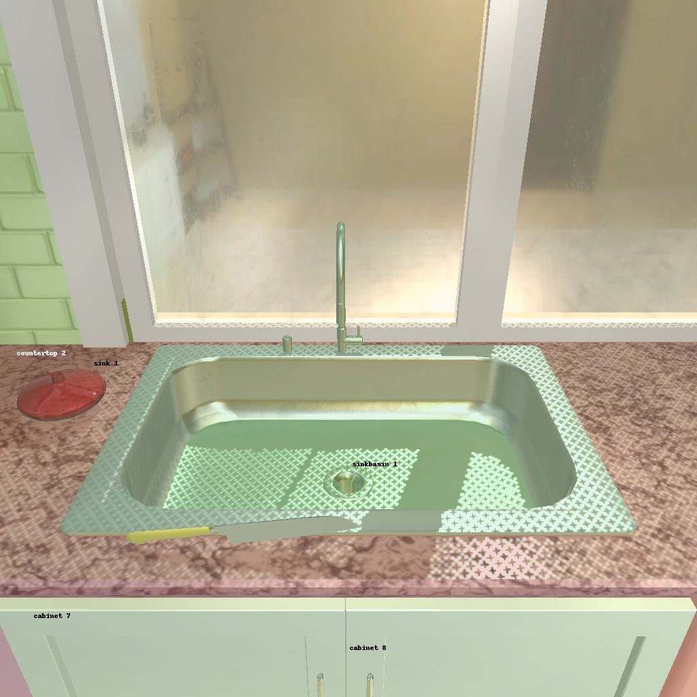

---------------------------------------------------------task: 16---------------------------------------------------------
--------------------------------------------------------------------------------------------------------------------------------------------------------------------
--------------------------------------------------------------------------------------------------------------------------------------------------------------------
Step:--------------------------------------------------------------------------1-------------------------------------------------------------------------------
----------------------------------------
VLM Prompt:
Image1:
**Instruction**
1. Analyze the provided image to identify all visible household objects, focusing on those relevant to the task description "put a cool pan in sinkbasin."
2. Use the analysis of the image and the task hint "The agent must find an object of the desired type, pick it up, go to a fridge, cool the object with the fridge, then find the correct location to place it, and put it down there. The agent does not need to use the fridge button or open the fridge to cool the object, and the agent just needs to do action that is "cool the object with the fridge"." to answer the question: what is the most reasonable action in the choices for the task description "put a cool pan in sinkbasin"?
4. Decide and write the answer using the template: The answer is: (i): , where i is the real number. If there is no desired object in the image, search every place based on **Initial Observation** to find the object. And if no one is exactly correct, choose a similar answer.
**Initial Observation**
You are in the middle of a room. Looking quickly around you, you can see cabinet (1-9), countertop (1-3), drawer (1-9), stoveburner (1-4), microwave (1), sink (1), fridge (1), toaster (1), coffeemachine (1), sinkbasin (1), shelf (1-3), garbagecan (1)
**Answer Choices**
(1): go to cabinet 1
(2): go to countertop 1
(3): go to cabinet 2
(4): go to countertop 2
(5): go to drawer 1
(6): go to drawer 2
(7): go to drawer 3
(8): go to drawer 4
(9): go to stoveburner 1
(10): go to drawer 5
(11): go to stoveburner 2
(12): go to stoveburner 3
(13): go to stoveburner 4
(14): go to cabinet 3
(15): go to cabinet 4
(16): go to microwave 1
(17): go to cabinet 5
(18): go to cabinet 6
(19): go to cabinet 7
(20): go to sink 1
(21): go to fridge 1
(22): go to toaster 1
(23): go to coffeemachine 1
(24): go to cabinet 8
(25): go to drawer 6
(26): go to drawer 7
(27): go to drawer 8
(28): go to sinkbasin 1
(29): go to shelf 1
(30): go to shelf 2
(31): go to countertop 3
(32): go to shelf 3
(33): go to drawer 9
(34): go to cabinet 9
(35): go to garbagecan 1
**Answer**
Let's think step by step by following the instructions.
----------------------------------------
----------------------------------------
Original Response:
First, we need to find a pan, which is not visible in the provided image. Since there is no pan in the sinkbasin or on the visible countertop, we should search in places where pans are usually stored, such as cabinets or drawers.
Next, we have to "cool the object with the fridge," but we do not need to interact with the fridge's buttons or doors. This likely means we just need to be in proximity to the fridge to perform the "cool" action.
Finally, we need to put the cooled pan in the sinkbasin, which is visible in the image.
Given these steps and the initial observation that mentions the locations of various items, the most reasonable action to begin this task is to search for the pan in the cabinets or drawers. Since the image shows sink 1 and sinkbasin 1, it is logical to start searching nearby.
The closest options from the answer choices are cabinet 7 and drawer 4, which are directly below the sinkbasin.
The answer is: (7): go to drawer 3, as it is closer to the agent's current position than cabinet 7 (which is also not visible in the image), and drawers are a common place to find pans. If the pan is not found in drawer 3, the agent can continue searching the other cabinets and drawers based on the initial observation.
----------------------------------------
----------------------------------------
>>> Refine Original VLM Response and Get Pure Action: go to drawer 3, as it is closer to the agent's current position than cabinet 7 (which is also not visible in the image), and drawers are a common place to find pans
----------------------------------------
-----------------------------------------------------------------
Running time: 38.847835302352905 seconds
Total Money: 5.249190000000002
-----------------------------------------------------------------
-----------------------------------------------------------------
Text Observation:Nothing happens.
-----------------------------------------------------------------
UNSUCCEED